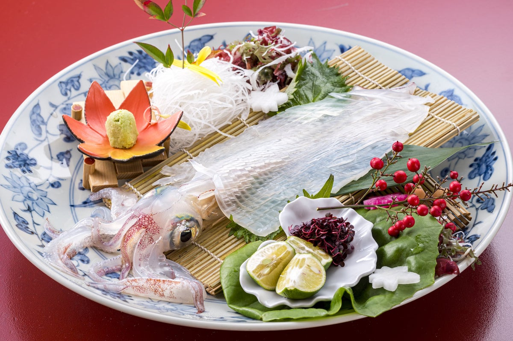

「まん腹食べて、まん腹飲んで、まん腹話して、まん腹話して欲しい」
そんな思いを込めて
自慢の一品

やりいかの活造り
呼子直送やりいかの活造り。なんと一杯980円。水槽から出してすぐに捌きますので、 とても新鮮で透明度が高く、甘いイカは絶品です。その上当店では驚きの安さ。 大変人気なため、ご予約をおすすめします。
もつ鍋
福岡といえばもつ鍋。ベースの醤油スープに、もつの油やキャベツの甘味は絶品です。 具材を食べ終わった後は、残った汁にちゃんぽん麺やご飯を入れて雑炊にしたりと、最後までお楽しみいただけます。 是非一度、福岡名物を堪能してみませんか？
当店について
昭和23年築の古民家を改装した当店は、どこか懐かしさを感じます。大衆居酒屋ならではの明るい雰囲気の中、 産地直送の新鮮な魚介類を使った逸品や福岡名物のもつ鍋で、宴会を盛り上げます！さらに、全国各地から 集めた約45種類の焼酎・地酒もございますので、お好みの一杯が見つかること間違いなし！